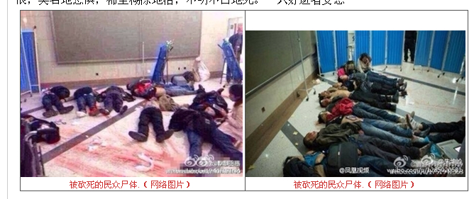
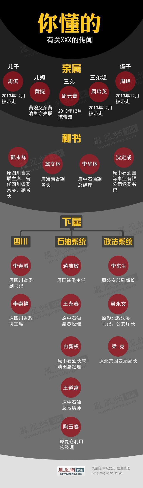

Conversation with 81184027 at Sun 02 Mar 2014 11:00:17 AM CST on 154115835 (webqq)
(10:52:32 AM) 埃及无雪: 也许有一天会
(10:53:51 AM) 埃及无雪: 这个很有可能东伊运
(10:53:18 AM) 埃及无雪: 可是不要认为什么事都与全能神扯上关系，感觉你好极端
(10:54:06 AM) 埃及无雪: 是啊
(10:53:58 AM) 安徽-市区&钟馗: 这个与新疆有关，新闻都播了，有什么质疑的呢？
(10:54:03 AM) 安徽-市区&钟馗: 真搞不懂你。
(10:55:11 AM) 极致: 钟馗少在这里胡扯
(10:54:19 AM) 安徽-市区&钟馗: 你上网搜一下，什么都知道了。
(10:55:30 AM) 极致: 和全能神什么关系啊】
(10:54:32 AM) 埃及无雪: 新疆和全能神有什么关系
(10:55:56 AM) 极致: 你不在那个群里负责好你的工作
(10:54:55 AM) 埃及无雪: 我昨天晚上看了到凌晨4点
(10:55:04 AM) 安徽-市区&钟馗: 与东伊运有关。那些暴徒也被洗脑了。
(10:55:14 AM) 埃及无雪: 基本都知道
(10:55:34 AM) 安徽-市区&钟馗: 懒得再说了。
(10:57:11 AM) 极致: 呵呵呵 你全家
(10:56:41 AM) 安徽-市区&钟馗: http://news.qq.com/a/20140302/005092.htm?pgv_ref=aio2012&ptlang=2052
(10:56:51 AM) 埃及无雪: 钟馗，是不是邪教的卧底？我感觉他心态很有问题
(10:57:14 AM) 埃及无雪: 很极端，有点捣乱的感觉
(10:52:32 AM) 埃及无雪: 也许有一天会
(10:53:51 AM) 埃及无雪: 这个很有可能东伊运
(10:53:18 AM) 埃及无雪: 可是不要认为什么事都与全能神扯上关系，感觉你好极端
(10:54:06 AM) 埃及无雪: 是啊
(10:53:58 AM) 安徽-市区&钟馗: 这个与新疆有关，新闻都播了，有什么质疑的呢？
(10:54:03 AM) 安徽-市区&钟馗: 真搞不懂你。
(10:55:11 AM) 极致: 钟馗少在这里胡扯
(10:54:19 AM) 安徽-市区&钟馗: 你上网搜一下，什么都知道了。
(10:55:30 AM) 极致: 和全能神什么关系啊】
(10:54:32 AM) 埃及无雪: 新疆和全能神有什么关系
(10:55:56 AM) 极致: 你不在那个群里负责好你的工作
(10:54:55 AM) 埃及无雪: 我昨天晚上看了到凌晨4点
(10:55:04 AM) 安徽-市区&钟馗: 与东伊运有关。那些暴徒也被洗脑了。
(10:55:14 AM) 埃及无雪: 基本都知道
(10:55:34 AM) 安徽-市区&钟馗: 懒得再说了。
(10:57:11 AM) 极致: 呵呵呵 你全家
(10:56:41 AM) 安徽-市区&钟馗: http://news.qq.com/a/20140302/005092.htm?pgv_ref=aio2012&ptlang=2052
(10:56:51 AM) 埃及无雪: 钟馗，是不是邪教的卧底？我感觉他心态很有问题
(10:57:14 AM) 埃及无雪: 很极端，有点捣乱的感觉
(11:05:54 AM) 光: (10:55:04 AM) 安徽-市区&钟馗: 与东伊运有关。那些暴徒也被洗脑了。 //嗯，东突问题也是历史问题了
(11:06:12 AM) 光: 这个国内的很多人可能多不太了解
(11:06:26 AM) 光: 政府对这个的解释也比较片面
(11:06:29 AM) 反邪★石家庄: 只有以暴制暴
(11:06:43 AM) 光: 要读书，特别读一些非主流的禁书才能搞明白
(11:06:52 AM) 光: 群共享里面有这方面的书
(11:06:45 AM) 反邪★石家庄: 来次严打
(11:13:42 AM) 光: 生平 王力雄生於吉林長春。母親鄭荃是長春電影製片廠的編劇。父親王少林在文革前擔任長春第一汽車廠的副廠長，1968年被打成「走資派」和「蘇修特務」，死於被拘押中，定為「畏罪自殺」。1969年王力雄隨從「牛棚」釋放的母親下鄉插隊4年，開始寫詩。1973年作為工農兵學員在吉林工業大學汽車專業學習，大學期間（1975年）產生「逐層遞選制」的設想。畢業後分配到長春第一汽車廠工作，先在車間當工人，一年後成為車間技術員，開始寫小說和電影劇本。 1978年王力雄主動申請調動到湖北第二汽車廠工作，從事計算機技術應用於企業管理，其間參與民主牆活動，並在油印刊物《今天》發表第一篇小說——《永動機患者》。1980年以「借調」形式離開二汽，脫離中國官方體制。 此後王力雄寫電影劇本，並在電影攝製組工作。1983年寫作第一部長篇小說《天堂之門》。1984年，王力雄獨自在青海藏區的黃河源頭乘用汽車內胎扎捆的筏子漂流1200餘公里，橫貫黃河上游的藏族地區，從此開始對西藏的關注。1985年－1986年年寫作紀實小說《漂流》，1987年出版。1988年加入中國作家協會。1988年開始寫作政治寓言小說《黃禍》，署名為「保密」，1991年由香港明鏡出版社出版。1991年－1994年，寫作《溶解權力——逐層遞選制》，1998年出版。 1994年，與梁從誡、楊東平、梁曉燕等人成立了中國大陸第一個民間環保組織——自然之友，此後策劃和親自參與數個長期項目。 1995年－1998年，在十次深入西藏和各省藏區，在藏時間累計2年，走遍所有藏區的基礎上，寫作《天葬：西藏的命運》。此後王力雄四次與第十四世達賴喇嘛見面交流。1999年1月起，王力雄在新疆收集資料，準備寫新疆民族問題的著作。1月29日，被中國國安部以涉嫌泄漏國家機密為由逮捕，關押42天後釋放。王力雄以此經歷寫成《新疆追記》一文，在網上公開發表。1999年出版文集《自由人心路》。 2001年5月2日，公開發表聲明退出中國作家協會，他在聲明中發問：「究竟是中國的作家天生就是殭屍，還是中國的「作家協會」想把並且正在把中國的作家變成殭屍？」 2002年4月，出版了《與達賴喇嘛對話》。2002年創辦「遞進民主」個人網站。2002年12月，發起對四川藏區阿安扎西活佛案的簽名請願活動，呼籲當局公正審理。2003年2月，因政府方面的命令，時任「自然之友」理事的王力雄被自然之友除名。2004年，由台灣大塊文化出版《遞進民主——中國的第三條道路》。 2004年底，與藏族女作家唯色結婚。 2007年10月，經過歷時九年的調查和思考，在台灣大塊文化出版新疆問題著作《我的西域，你的東土》。 主要著作 《黃禍》，1991年，政治寓言小說。該書描繪中國陷於政治、經濟、文化、人口與生態的重大危機，終於導致整個社會的總崩潰，難民大批衝出國境，危及世界和人類的存在。這部小說引起海外媒體追蹤報道，王力雄也由此獲譽「中國最敢言的作家」。該書後來入選亞洲周刊二十世紀中文小說一百強，列第41位，至今仍在港台及海外暢銷。 《天葬： 西藏的命運》，1998年，西藏問題專著。王力雄在書中以大量的親身經歷和實地所見來陳述他的論證，涉及到了西藏問題的歷史、現狀與各個方面。這部著作在 漢人與藏人中都得到了高度的評價，被認為是迄今為止研究西藏問題最為客觀、深刻的著作之一，展現出王對西藏這片土地的深切憫懷與過人洞見。海外媒體曾組織 研討會專門予以討論。2009年推出增訂版。 《我的西域，你的東土》，2007年，新疆問題專著，《天葬：西藏的命運》的姊妹篇。整理收入了99年曾發表於互聯網的《新疆追記》一文，另有王 此後四次重返新疆的見聞，對新疆當地維族人士的訪談，以及如何解決新疆問題的思考。書中有大量的實拍維族圖片和民俗情況記述，都是首次公開。 《遞進民主——中國的第三條道路》，2004年，政治制度設計專著。參考了主流學術界的行文方式，重新詮釋了「逐層遞選制」，並對中國當前的經濟、生態、社會、政治危機進行了深入剖析。 《自由人心路》，1999年，以生態環境保護為主的思想隨筆。書後附錄小冊子《溶解權力》，政治制度設計專著。這部書討論的是選舉方式，並提出了一個全新的概念－「逐層遞選制」，就是希望以此方法使中國大陸的體制安全轉型。 《與達賴喇嘛對話》，2002年，對話錄。 2007年7月，與妻子唯色合著的英文文集《Unlocking Tibet》在瑞士出版。書中收錄他數年來研究西藏問題的多篇文章。 散篇：《911啟示錄》，《末法時代——藏傳佛教的功能及其被毀壞》，《達賴喇嘛是西藏問題的鑰匙》，《有關達賴喇嘛的一個幻想小說提綱》，《新疆追記》，《民族主義與宗教》 ，《西藏面對的兩種帝國主義——透視唯色事件》，《毛澤東主義與人間天堂》，《底層毛澤東與「經濟文革」》，《中國從文革得到什麼》，《以超越者聯盟突破精英聯盟》等。 榮譽 2002年6月，北京當代漢語研究所授予王力雄2002年「當代漢語貢獻獎」。 2002年6月29日，王力雄在紐約接受獨立中文作家筆會授予的第一屆寫作自由獎。 2003年7月，與廖亦武、劉賓雁同獲美國赫爾曼/哈米特人權寫作獎。 2007年2月24日，紐西蘭漢學會授予王力雄榮譽會員稱號。 2009年10月，達賴喇嘛在華盛頓DC授予真理之光獎。 外部連結 王力雄的有托邦 王力雄個人網站 博訊網—王力雄作品選編 崗堅霸資料庫—《天葬：西藏的命運》全書 《我的西域，你的東土》PDF版全書下載 獨立中文筆會授予王力雄第一屆自由寫作獎的頒獎辭 劉曉波，解開西藏死結的鑰匙——讀王力雄新著《與達賴喇嘛的對話》，2002年4月23日， 茉莉，讀王力雄《我與達賴喇嘛的四次見面》，2002年4月29日 茉莉，為西藏活佛尋求正義──王力雄與阿安扎西案件，2003年1月03日 魏過，中國知識分子的成熟和進步---談王力雄的《天葬：西藏的命運》 王力雄的Twitter
(11:13:43 AM) 心理咨询 雪: 大家好
(11:14:06 AM) 光: https://zh.wikipedia.org/zh-hk/%E7%8E%8B%E5%8A%9B%E9%9B%84
(11:14:20 AM) 光: 关于东突的问题还有新疆的问题
(11:14:43 AM) 光: 如果大家想搞明白，王力雄的我的西域，你的東土这本书不得不看
(11:14:58 AM) 光: 群共享里面有
(11:15:34 AM) 光: 《我的西域，你的東土》，2007年，新疆問題專著，《天葬：西藏的命運》的姊妹篇。整理收入了99年曾發表於互聯網的《新疆追記》一文，另有王 此後四次重返新疆的見聞，對新疆當地維族人士的訪談，以及如何解決新疆問題的思考。書中有大量的實拍維族圖片和民俗情況記述，都是首次公開。
(11:16:19 AM) 光: 但是从几次表面现象冒然概括原因，显然是无法了解问题实质的
(11:24:27 AM) 光: 德国之声（DW）：新疆维吾尔自治区副主席史大刚最近表示："新疆的稳定大局是向好、向稳定方向发展的，而且形势非常 好。但是总是有少数、极个别暴力恐怖分子、民族分裂分子、极端宗教分子想弄点事儿，他们的组织都在国外，幕后支持者都在境外，总是要干一点儿以显示他们的 存在，同时他们要闹一点事儿给国家的大好局面摸黑或者弄出点负能量，特别是这三股势力总是不甘心，因为新疆越发展、越稳定、形势越好，他就感觉到不自在， 所以时不时就闹一点事儿出来。"他说的这些与您的认知是否相符？ 王力雄：新疆有事儿，这个是肯定的。不光是他们这样说，事实上各种各样的报道也不断的出来告诉我们新疆是有各种各样的问题的。但是，像他说的这种都是境外 势力操纵和一些人想要诚心破坏新疆的大好形势，这点我是完全不能认同的。因为从7·5以来，甚至可以追溯得更远，他们一直是说境外势力在操纵。但是到现在 为止，他们也没有拿出来过硬的证据，来证明这一点。那么同样我们可以类比的就是西藏发生的事情。从08年3·14事件一发生的当天。他们就说，他们有确凿 的证据说明是境外势力，有计划、有组织、有预谋的进行操纵。但是事隔了这么多年，他们也没有拿出证据。 Buchcover My West Land, Your East Turkestan, published by Dakuai publishing house in Taiwan in October, 2007; Copyright: Wang Lixiong; eingestellt: April 2011***Das Bild darf nur im Rahmen einer Buchbesprechung genutzt werden 王力雄著作：《我的西域，你的东土》封面 所以这种事情可以和新疆类比，其实是一样的。这是他们一向的一个说法。实际上问题的根源就在于民族政策的问题。就在于他们对当地民族进 行统治的过程之中，制造的那些矛盾和隐患，在不停的显示和爆发出来，所以这种事情是不会平息的。 只要他民族政策不变化，不改变他们自己的做法的话。即使一时能看到好像是暂时没有事情，但这决不意味着矛盾就被消除了，那些矛盾，那些隐患都在积累。到了 一定的时候，所谓的于无声处听惊雷，它就会爆发，就像7·5之前，新疆表面看上去没有什么事情，可是突然7·5出来就会那样的惊天动地。就像西藏的事 件，3·14之前，正是在开两会，西藏的那些领导人在北京的人大会议上信誓旦旦的说，西藏是历史上最好的时期，从来还没有这么好过，话还没落，就挨了这么 大一个嘴巴。西藏就出现了那样的事情。所以新疆也是一样，这些问题迟早还是要爆发的。 DW:中国媒体报道称，新疆自治区党委提出"八字方针"，要"教育广大新疆群众和各族群众在法律允许范围内允许宗教信仰自由，宗教人 士、信教群众可以自由活动。不能允许极少数的人，民族分裂分子把新疆这块国土分裂出去，破坏新疆的祥和社会"。我们想知道，新疆的宗教人士有多自由，社会 是否如当局所称那样祥和？ 王力雄：其实你从他说的八字方针，什么教育、管理、打击，你一听就知道这都是自上而下的，一个高高在上的权力集团用一幅非常强硬的面目，或者视下面的人民 为草芥，或者至少是被他们的统治的对象，使用这种态度，来治理地方的。你说就这种态度，他怎么能够让当地的人民去感到满意，或者感到这是他们希望得到的一 种状况呢？根本不会的，在这样的一种态度之中，层层的官员上面咳嗽一声，下面就是打雷一片的那种政治体制，他肯定是要把很多事情都要推到极端的，制造层出 不穷的矛盾。所以很多问题，正是出于这样的心态导致的。 China Xinjiang; Uiguren
Kashgar Sonntagsmarkt / Tiermarkt; es wird viel gehandelt 政府“教育、管理、打击”的心态怎能让新疆“祥和”？ 新疆的宗教自由我们不用说别的了，我可能对新疆的宗教也没有深入进去。但是你从最简单的情况，和表面上反映出来的诸如不许当地民众留胡子、不许戴头巾、不许到清真寺里面去做礼拜、到了斋夜的时候就强迫一些人去吃东西等等这些事情，你怎么会认为宗教是自由，是祥和的呢？ DW:史大刚在讲话中也提及，如果要袭击的话，当地的领导是袭击者的重要目标，"地方敌对势力仇视的是当地领导。但那些领导者们都好好的，谁也没有 带一个警卫员，带上抢"。另外一些村，可能就几个汉族干部，没有一户汉族农民，或者一个县就几千汉族人，几十万少数民族。如果社会真的不稳定，那几十个汉 族干部早就没了。您怎样理解他代表政府的这番表态？ 王力雄：这一点就是说如果这些领导干部在政府大院里散步不带人，或者家小在周围的公园、广场里吃完饭去散散步什么的， 这一点我也不怀疑。因为像乌鲁木齐、喀什这样的城市里面，那城市中心全部是军警密布的，他们是可以有这种充分的安全感。但是说如果他们自己单身下乡，不用 任何戒备，以"宾至如归"的方式，到民族地区去，这一点我基本是不相信的。 就在90年代我去新疆的时候都能看到，他们那里的军队来一个什么稍微重要一点的人物，都会非常夸张的派荷枪实弹的军人去做保卫。何况是领导人要过来，肯定 是早早都车水马龙的把一切都戒备起来的，根本不可能出现他说的那种情况。至于说村里有一些村干部，或者乡干部，这点其实也没有什么了不起的。就像当年日本 占领中国的时候，几个日本兵就把一个县看得老老实实的。那难道你能说那时的中国人对日本人就是多么的感恩戴德，或者是顺从喜欢吗？其实不是。只要是哪一天 有这种可能，他们马上就会起来表达自己的不满、甚至是仇恨。 几个兵可以看得住的时候，是因为那几个兵后面有一个强大的机器、铁血机器、杀人机器、有一个体系在那儿支持着他。所以可能一时会出现这样看似太平的情况，但是他说的这些实际上都不足以服人的。
(11:27:58 AM) 光: 所以大多数人讨论的事情，很多都没到点子上，从根本看，读书太少的缘故，或者眼界受限于国内的一小块范围了
(11:28:26 AM) 光: 这也是我想和安徽-市区&钟馗谈的事情
(11:28:41 AM) 光: 国内有这样观点的人还不少，但是不代表他们是对的
(11:31:33 AM) 广东-深圳&漂流: 
(11:33:23 AM) 光: 横看成岭侧成峰，远近高低各不同。不识庐山真面目，只缘身在此山中。
(11:33:33 AM) 光: 看问题，一种角度是不够的
(11:33:40 AM) 光: 兼听则明
(11:35:28 AM) 埃及无雪: 太惨了:撇嘴:
(11:36:09 AM) 埃及无雪: 为死者祈祷:share:
(11:37:18 AM) 光: 都是一些历史积累的怨气
(11:37:34 AM) 埃及无雪: 嗯
(11:38:00 AM) 埃及无雪: 这些都是手无寸铁的无辜人群啊
(11:38:16 AM) 埃及无雪: 连小孩都砍
(11:38:43 AM) 光: 我们汉族人里面也有极端的人
(11:38:35 AM) 埃及无雪: 下得了手吗？？
(11:38:49 AM) 光: 少数民族也是人
(11:38:54 AM) 光: 当然也有这样的
(11:39:14 AM) 光: 把人当人看
(11:39:12 AM) 埃及无雪: 我不泛指少数民族，我指暴徒
(11:39:35 AM) 光: 偏激的结果啊
(11:39:39 AM) 光: 思想偏激的结果
(11:39:56 AM) 光: (11:32:44 AM) 河南-平顶&航标: 咱们要在全国各地成立敢死队，加入里面发现头头就杀，一个不留 //这个不也是么
(11:40:14 AM) 光: 你可以看看社会心理学
(11:40:16 AM) 光: 这本书
(11:40:22 AM) 光: 里面有提到这个问题
(11:40:27 AM) 埃及无雪: 以暴制暴的恶果啊！！！
(11:40:49 AM) 埃及无雪: 让人民，普通老百姓承担！
(11:41:17 AM) 光: 先是杀头头
(11:41:30 AM) 光: 后来杀头头不容易，就杀老百姓了
(11:41:33 AM) 光: 历来如此
(11:42:34 AM) 埃及无雪: 最早的历史上，双方一开始都不要下手这么狠，今天也许就不会这样
(11:43:13 AM) 埃及无雪: 大家都留一点余地啊
(11:43:17 AM) 习惯你宠: 如果深层的问题解决不了，我相信这不止是结束
(11:43:32 AM) 光: 嗯
(11:43:43 AM) 光: 只会升级
(11:43:53 AM) 光: 分歧导致矛盾，矛盾导致冲突
(11:44:04 AM) 习惯你宠: 恶性循环
(11:44:17 AM) 光: 嗯
(11:44:11 AM) 埃及无雪: 美国的州拥有随时宣布独立的权利，可谁也不会独立
(11:44:27 AM) 光: 嗯
(11:44:43 AM) 光: 你怎么对待别人，最后别人也会同样的对你的
(11:44:39 AM) 埃及无雪: 这才是力量！
(11:44:48 AM) 埃及无雪: 是的
(11:44:59 AM) 光: 以暴制暴，这个暴最后还是落在自己身上
(11:44:56 AM) 埃及无雪: 说的很对
(11:45:47 AM) 光: 嗯
(11:46:44 AM) 埃及无雪: 自己摆正姿势，自己强大，自己政治廉洁透明，你看看谁愿意独立？？谁都愿意靠拢你
(11:46:55 AM) 广东-深圳&漂流: 到现在为止，官方还没有披露任何凶手的身份和体貌特征，官媒就灌鸡汤要求逝者安息。死于非命，何以安息
(11:49:10 AM) 埃及无雪: 习惯了，这些遮遮掩掩的姿势，恶心
(11:52:52 AM) 埃及无雪: 个人认为这次暴力事件最应当受到谴责批判的不仅是暴徒，还应该是政府。根本原因是政治因素，是政府无能，没有正确处理一些根本性的历史遗留问题，而从来不深刻反思，最擅长的蒙蔽老百姓，遮遮掩掩
(11:53:08 AM) 光: 嗯
(11:54:16 AM) 埃及无雪: 我们需要的是政府自我检讨，而不是把老百姓当猴子耍。否则这次暴力事件绝对不是结束
(11:55:02 AM) 埃及无雪: 饿死了，熬了通宵，早饭没吃，吃午饭了:Q
(11:55:55 AM) 光: :face14:
(12:06:10 PM) 埃及无雪: 总有种不好的预感，感觉政府面临了空前复杂的局面，而政府没有拿出诚意和改良的方案，一如继往的简单粗暴，只是玩弄花腔，目前仅仅是选择性的反腐，终究是一个利益集团打翻另一个集团，最根本上没有任何的制度改进，骗的了百姓一时，骗不了一世，养老、财产公布、医疗、教育、垄断、腐败等等，没有诚意进行制度改革，后果狠危险
(01:10:02 PM) 火炎焱燚/aiq: 匮鏃肉蒲团永久下载网址：http://www.9cyp.com:81/
欢迎你的光临本站欢迎有实力的团队代理宝贝的加盟。诱惑多多
http://88888.521u.cn现在注册送108888金币 【521电玩城】为您强力推荐史上最强人气; 【激情捕鱼】,全新版本：全网络独有素材和模式，超可爱鱼群，超高倍率让你赢不停~快来玩吧注册即送108888金币，让您轻松赚金币！热门游戏：李逵捕鱼，金蝉捕鱼，哪吒闹海，梭哈，扎金花，德州扑克，神兽大转盘，百家乐，通比牛牛，至尊五张，百百家乐，百人牛牛，百人推饼，四人牛牛等等游戏
使用【豪迪QQ群发器 2014】自动发送，内容与本软件无关!
(02:11:46 PM) pastorqi: 3月2日，2014年的第61天。
天天主恩惠,福满溢灵程!
愿我们收获活水吗哪，对神发出感谢赞美
旧约 利26: -27:
诗 45:
箴 10: 22
新约 可10: 32-52
(02:56:14 PM) 光: 【转载】帮纽约色情业的中国女性受害者重生 2014-03-01 22:18:37
色情人口贩卖受害者在美国一家帮助组织FAIR Girls的办公室练习瑜伽。
文：赵晗
2013年岁末，纽约皇后区刑事法院。我很不自在地坐在第8号法庭里——在座的女性中除了社工和我，都被指控卖淫，等待审判。
这一天的被告华人女性占大多数，只有两个看上去像西语裔的女孩。我偷偷打量她们，企图从外观、神态上看出些什么，但是这种辨认毫无效果。律师、社工走来走去叫着名单上的名字，有时也看看我，问我是不是今天要出庭的某某人。
社 工Amy结束了一个陪谈，走回我身边坐下，耳语了一句：“她竟然想贿赂我！”Amy是和我从小一起长大的朋友。我们都生于80年代的北京，从出生起就是邻 居，读同一所高中。后来她去南京大学读社工专业，毕业后在北京一家服务艾滋病患者的非政府组织(NGO)工作了两年，然后又到密歇根大学完成了社工硕士学 位。
目前她在纽约一家社工机构工作，专门救助遭遇色情人口贩卖的中国女性。工作之余她还在纽约城市大学攻读国际犯罪和人口贩卖硕士，“毕业了可以进FBI，”她说。由于她的工作性质存在一定不安全因素，故Amy不便透露全名。
去年圣诞节前夕我在纽约度假时住在她家，一天她邀请我说：“今天我的client（当事人）开庭，这是非常特殊的一间法庭。我想你应该去看看。”
纽 约皇后区刑事法院(Queens County Criminal Courts)，是纽约州最早开始人口贩卖干预(Human Trafficking Intervention)的法院。十多年前，该法院的卡马乔(Fernando Camacho)法官在面对一个因为卖淫屡次被抓的16岁女孩时，充满困惑。“我可以判她坐15天牢，但是我不想这么做，”卡马乔在当时接受一次采访时 说，“她16岁就出去卖淫，背后肯定有原因。”
之后他开创了一种新的模式，不是简单的判刑入狱，而是邀请社工和专业机构介入，识别哪些妇 女是色情人口贩卖受害者，并通过与NGO的合作令她们脱离控制，学习语言、掌握技能，最终重获新生。这个经验随后在纽约州被推广，截至2013年11月， 纽约州有这个项目的法院已经扩展到11间。纽约州也是全美国第一个推行这一项目的州。
被指控卖淫的妇女在采纳这一干预项目的纽约州法庭上 通常有三种选择：第一是当庭认罪，接受120美金的罚款，留下一次违规记录（非犯罪记录）。第二种选择是接受庭审，可能被裁定为“卖淫罪”并入狱（具体天 数由法官决定，最多90天），这样将影响她们的身份申请。第三种选择就是接受诸如Amy所在机构的辅导，如果在半年内不再因为同样指控被抓，就可以撤案， 没有罚款。律师通常会推荐第三种选择，而被告也通常愿意接受这一选择。
法拉盛街头，随处可见的按摩院。By Amy法拉盛街头，随处可见的按摩院。By Amy
这 种专业机构的干预方式并没有固定模式，机构间也会彼此协作。Amy所在机构与法庭合作的主要目的是通过5-8次辅导(couselling)确定当事人是 否为人口贩卖受害者，之后为她们联系律师和法律顾问，普及法律权益知识，提供心理咨询或生活帮助。如果当事人愿意，可以住进机构安排的免费秘密庇护所 (safe house)。机构还为受害者提供各种社会再融入课程，包括语言学习、手工制作、艺术治疗等。如果Amy在辅导过程中发现当事人受到了家庭暴力伤害，则可 以引荐给另一间与法庭接口的反家庭暴力机构。
想“贿赂”Amy的是一名来自中国的朝鲜族妇女，她选择接受辅导，但在庭上表现出心不在焉，总是搓手并回头看我和Amy。她被律师交给Amy，律师一走，她就拉起关系来，要塞给Amy些钱，不去接受辅导，试图让Amy帮她蒙混过关。Amy当场拒绝了。
“她们一开始都不愿意对我说实话，东拉西扯，”Amy回到座位后对我耳语，“但是一旦信任建立了，她们会告诉我许多你想也想不到的事情。”
“我 永远也不会忘记那个女孩，”Amy事后跟我讲了一个让她一辈子也忘不了的当事人。为了保护当事人，Amy不愿透露当事人的真实姓名。“那是在我刚开始这份 工作的第一个月。”那天在法庭，Amy见到一个中国女孩低着头蜷缩在角落里，虽然戴着墨镜和口罩，但是她脸上多条已经感染的伤口还是清晰可见。“我吓了一 跳，”Amy停顿了一下，“她的脸都变了形！”
在辅导中Amy了解到，这个女孩通过“假结婚”来到美国，对方是比她年长20多岁的中国人，已经成为美国公民。在“假结婚”的交易中，她期望通过婚姻获得绿卡，对方则赚取金钱。但在绿卡办理到一半的时候，她的“丈夫”消失了，也切断了她一切的经济来源。
走投无路之下她在当地中文报纸上看到“按摩”的招聘广告，联系后很快得到回复。华人老板派司机接她去工作，车开了很久，在一个很偏僻的地方停下。司机带她上楼，结果一进门就要强奸她，对她说：“你可以开始工作了。”她方才知道所谓“按摩”其实就是变相提供性服务。
反抗无果，司机还对她施加了极其残忍的暴力，致使她面部和肢体多处受伤。殴打过后司机说：“你做了，我才带你回去。”之后几天她带伤开始了“工作”，很快在一次服务中被警察抓到，被指控卖淫。
由 于被打的伤口没有得到及时处理，加上她是过敏体质，导致严重感染。“我自始至终也没有看见过她长什么样。每一次她来找我都是带着墨镜和口罩，脸上的伤总也 好不了，”Amy说，“这个案子对我的冲击太大了。她不知所措地蜷缩在法庭里，这个世界仿佛离她好遥远。她没有做错什么，却在等待审判。”
在 法庭引荐给Amy的中国妇女中，有大概15%-20%的人最终会被认定为色情人口贩卖受害者。这些妇女多是以偷渡或其他非法途径进入并逗留在美国。虽然没 有具体的统计数字，但是根据Amy的总结，这些妇女大多来自福建、吉林、河南等地的郊区和农村，北京、上海、天津等发达地区也有，多数人通过互联网得知了 偷渡或非法移民到美国的信息。
囿于语言文化等障碍，加之学历普遍不高，到了美国后，她们通常会在中文小报上寻找“按摩”等体力劳动的工作机会。但是这样的“按摩”生意往往和性服务难脱干系。“在我辅导的个案中，当很多女性知道按摩包括为男性自慰、任由男性抚摸，或者发生性交行为时，一开始也会抗拒。
而 老板和同事这时会劝说她‘你试试，如果不行就算了’，”Amy说，“但是，一个女人一旦开始了做这些事，她的自我形象就一落千丈，之后只会继续做下去。” 老板通常会用各种方法骗去她们的护照，不再归还。更有甚者，会利用毒品进行控制，使她们寸步难逃。还有一个惯用的伎俩，就是定期上演“打劫”。好不容易通 过卖淫挣到的钱，很快就被老板派来的人洗劫一空。
Amy从事的工作有一定的危险性，必须处处防着人贩子。而她们工作的地点，甚至连我也不 能透露。人贩子也并不都是男性，他们中也不乏曾经的受害者。随着新鲜血液的加入，资历老的女人开始自组团队。“女人贩子有独特的优势，”Amy告诉我， “她们特别能蛊惑其他女孩，因为她们格外了解女性的心理特点，懂得利用女性的弱点。”
很多色情人口贩卖的受害者，在离开中国前，生活已经窘迫至极，急于离开中国。“她们身上通常有着一种脆弱性，”Amy说，“在中国生活时缺少教育和政策支持，容易被利用。她们在中国的日子太绝望了，听到任何外界的‘甜头儿’，都会义无反顾。”
Amy这样形容她接触到的色情人口贩卖受害者：“不仅是‘绝望’。她们歇斯底里地渴望着生存的感受。她们迷惑、痛苦，总是被迫做出选择。”另外一个观察，就是她们不知道自己是谁，也不知道自己要什么。
由于认为她的当事人不宜向法庭和专业机构以外的第三方透露自己的经历，Amy拒绝了我采访部分当事人的请求。
曾经以为自己和这些人判若云泥，但Amy慢慢地也在她们身上找到了自己的影子。
在 这份工作中，她经历了不同阶段的身份认同。一开始她会把自己和这些女孩鲜明地划分开，“我和她们不一样。我是接受过高等教育的人。我对她们的很多做法不认 同。”但是随着接触的个案越来越多，她也开始思考：“我和她们在某种程度上一样——我们都是在中国长大，接受中国的文化和教育。我们都是为了获得理想中的 自由和更好的生活来到纽约，结果我们都面对预期的落差，和现实生活中很多的问题。”
许多女孩在讲述自己故事的时候会说“我再也不想回到中国去了”。而Amy当初离开中国来美国读书，在飞机起飞的时候，心里想的也是再也不回中国。“但是我现在不这么认为。因为我知道自己想要的是什么，而她们大多数不知道，也抗拒思考这个问题，”Amy说。
在 Amy眼中，来自法律和社会的支持保护固然重要，但似乎只有这些受害者才能真正帮到自己。“她们最需要的是对自己有清晰的认识，”Amy说，“这包括知道 自己是谁，知道自己活着的意义和价值。最关键的是她们在和自己相处时的感受，她们往往在一个人安静的时候会非常不安，无法认同自己。”她们活得很割裂。在 Amy所接触的这些女性中，几乎没有一个人会和家人坦陈自己在美国究竟在干什么，她们都在对家人的谎言中编织着自己的“美国梦”，成为“理想中的自己”， 并从中得到幸福感。
然而现实却是四五个人挤在一间狭小的居室，共用肮脏的厕所，忍受老鼠和蟑螂，并靠长时间提供无底线的性服务赚钱。“但很多人是用地域来划分幸福的，”Amy解释说，“她们中很多人想到‘我在美国’，就莫名的开心。在家人面前仍然觉得骄傲。”
“在我的工作中我更多地是让她们明白自己究竟想要什么，并明白自己是有价值的，”Amy很是惋惜地说，“这些受害者经历了太多的摧残，普遍认为自己毫无价值，她们毫不珍惜自己的身体，不懂得尊重自己。”
纽约皇后区刑事法院，是纽约州最早干预人口贩卖的法院，Amy纽约皇后区刑事法院，是纽约州最早干预人口贩卖的法院，Amy
Amy 带我亲眼见到的皇后区这间法庭上所洋溢的价值感和尊重，正是其与众不同的地方。即便其他法院也在学习这种人性化的干预模式，但Amy说很难找到类似感觉。 她去过纽约州很多法院，没有一间能够和这间比。那天她原以为我们会遇见卡马乔法官的继位者——日本裔法官芹田斗子(Toko Serita)，但她那天没有来，然而这并不影响第8号法庭内的秩序和温暖。进入法庭前，一个警察突然面向Amy举起了右手，我颇感震惊，但是Amy却默 契地和他击了一下掌。
警察说今天人不算多，看到我与Amy在一起，并没有盘问，而是热情地打招呼。Amy后来告诉我：“他知道这里中国人多，而她们往往不会讲英文，他就用翻译软件查到‘请保持安静’，还问我翻译得对不对，发音是否准确。但是在另外一些法庭，警察会对听不懂英文的人大声训斥。”
芹 田法官在的时候，“整个法庭都活了”，Amy说，“她没有用权威去审判别人，而是用爱去改变别人。”如Amy所说，一些受害者在多年的蹂躏和摧残下思想已 经扭曲，无法分辨什么对自己有益，也难以相信任何人。有些个案因卖淫罪被抓十余次但仍拒绝接受辅导和帮助。建立信任也是Amy在和个案接触中最大的困难。
虽 然没有亲自辅导过如此难缠的个案，但她见证过几个法庭上的常客终于对机构建立信任，最终在法庭和专业人士的协助下，离开人贩子的控制，获得谋生技能并重新 融入社会。每当一个棘手个案有了任何进步的时候，芹田法官都会走下高高在上的坐席，走到这位“犯人”面前，和她拥抱，对她说“我为你感到骄傲！”看到这种 场面，很多人也会跟着流下热泪，包括Amy在内。
Amy所在的机构会为学习动机强的女孩提供各种学习机会，并为她们减免学费。一些女孩甚至顺利在社区大学毕业，其中一人毕业后现在在一家当地医院做医疗助理。
然 而这种法庭和专业机构主导的干预模式在当下中国似乎不太可行。“美国是判例法国家，法官可以造法；中国是成文法国家，法官没有这个自由，”中国刑事辩护律 师张培鸿在接受采访时说，“而且这种针对性工作者的救助多来自民间而非官方，但中国民间这样的力量还很不成熟，也很难建立社会信任。搞不好会造成二次伤 害。”Amy也表示未曾听说过中国有类似的救助色情人口贩卖受害者的民间专业机构。
也许正是这种中美社会间的差异，使得Amy要想对国内 的家人和朋友解释清楚自己的工作变得不那么容易。“我的家人不太知道我具体在干什么，觉得总之是善事，所以很支持我，”Amy说，“我的朋友愿意听我讲述 自己的工作，不过多数是出于猎奇的心态。”但只有她自己明白自己为何坚持，为何继续。“最开始的那几个月我真的每一天都想要辞职。
如果没有上帝，我早已放弃。”Amy是一名基督徒，她相信这是上帝给她独特的历炼。“我的梦想是成为社工学的教授。我感恩上帝今天让我遇到的每一个人。每个人的人生都像是一部电影，有时你感到无聊，只不过因为你没有看到它的全部。”
从事社工工作后，Amy变得比原来更为成熟冷静，也更加宽容。“我们每个人都有许多的伤痛，我也是。我们往往要用一生去疗伤，”Amy说，“但在这份工作中，我从每一个个案身上都吸取了力量，使我的resilience（抗逆力）越来越强。”
“我的女孩们都很坚强。她们让我明白，这个世界上没有什么事情会让你永远站不起来。正是她们的存在，才令我从未停止反思我是谁，我的梦想是什么。”
从纽约皇后区刑事法院走出来，我和Amy经过法院隔壁的皇后区区政府(Queens Borough Hall)，许多人选择在这里结婚，门前草丛上堆满用于拍摄结婚照片的花束。我和Amy路过一对正在拍照的新人，新娘的笑容绽放在雪后初霁的阳光里，羞怯而灿烂。
我们驻足观望，这时Amy轻声说：“哪个女人不渴望被珍惜？”
(02:56:23 PM) 光: http://site.douban.com/209228/widget/notes/13176390/note/333412502/
(03:09:55 PM) 心理咨询 雪: 大家好
(03:12:51 PM) 埃及无雪: :share:
(07:14:56 PM) 埃及无雪: 政协发言人回应有关周永康传闻：你懂的
(07:16:06 PM) 埃及无雪: 
(07:16:49 PM) 光: http://news.163.com/14/0302/16/9MBIHSJ70001124J.html
(07:16:45 PM) 埃及无雪: 这位发言人是要火的节奏啊:dig:
(07:17:23 PM) 光: 吕新华(沉默数秒，开始笑，全场一片大笑。)：“实际上，我和你一样，从个别媒体上得到了一些信息，那么我大致上这样说一说，去年2013年中纪委监察部对涉嫌违法违纪的中管干部结案和处理的已经有31人，大家要知道，部分是部级干部。
(07:17:41 PM) 光: 我们严肃查处一些党员干部，包括高级干部严重违法违纪的问题，向全党全社会表明，我们所说的，‘不论是什么人不论其职位有多高，只要是触犯了党纪国法，都要受到严肃的追查和严厉的惩处’，绝不是一句空话。我只能回答成这样了，你懂的。”
(07:19:00 PM) 埃及无雪: 中国的官员、媒体、老百姓都在暧昧，大家在这种暧昧的环境里心知肚明，不言而喻
(07:21:42 PM) 埃及无雪: 很有意思呢